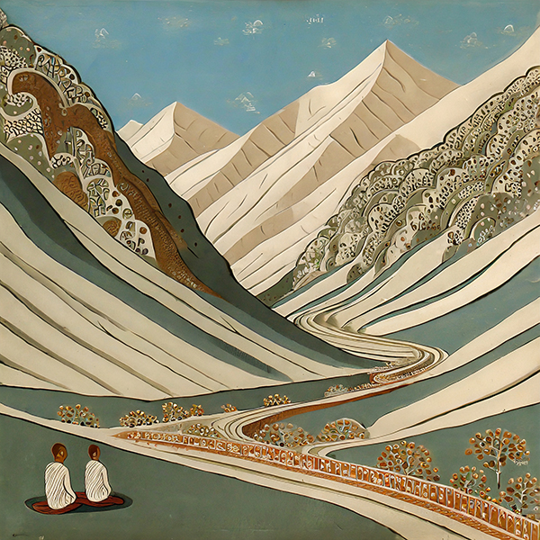
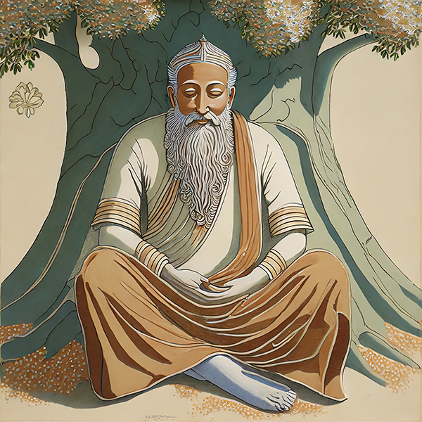
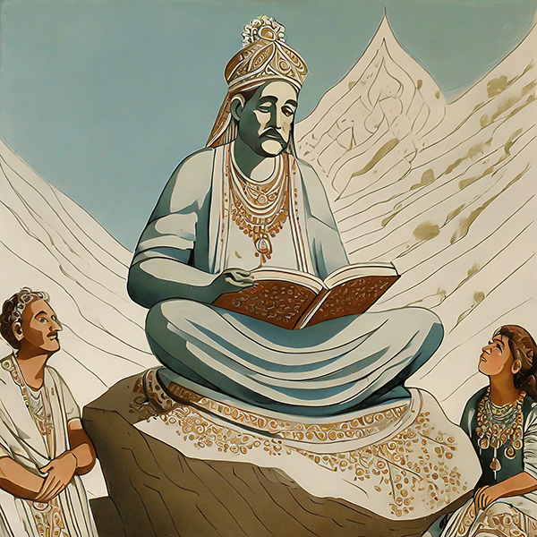
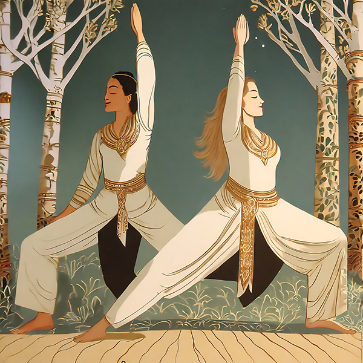
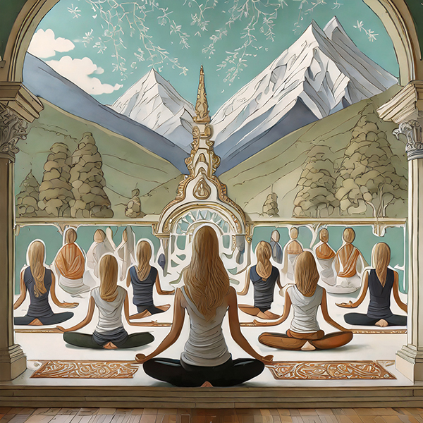

Timeline
-

3000 BCE:
Early Yoga in the Indus Valley
Yoga was practiced in the Indus Valley by the Dravidians and the Sanskrit-speaking Aryans. This period marks the early origins of yoga as a spiritual and ascetic practice.
-

1200 BCE:
Yoga in the Vedas
The Vedas, ancient sacred texts, make early references to yoga. The Vedas contain hymns and rituals that provide the foundation for the practice of yoga and its philosophical underpinnings.
-
500 BCE:
Yoga in the Bhagavad Gita
The Bhagavad Gita, an important Hindu scripture, includes teachings on yoga. In the Bhagavad Gita, the concept of yoga is expounded upon as a path to spiritual realization and self-discovery.
-

200 BCE-200 CE:
Compilation of the Yoga Sutras of Patanjali
The Yoga Sutras of Patanjali were compiled by the sage Patanjali in India, laying down the eightfold path of yoga. The exact date of the composition of the Yoga Sutras is uncertain, with scholars dating it somewhere between the 2nd century BCE and the 2nd century CE . This period marks a significant development in the systematization of yoga philosophy and practice.
-

800 CE:
Development of Tantra Yoga
Development of Tantra Yoga. Tantra Yoga emerged as a distinct and esoteric form of practice, emphasizing the harnessing of energy within the body to achieve spiritual goals.
-

14th Century:
Emergence of Hatha Yoga
Emergence of Hatha Yoga. Hatha Yoga became prominent, focusing on physical postures, breathing techniques, and meditation to achieve balance and harmony in the body and mind.
-

21st Century:
Globalization of Yoga
Yoga has become a global phenomenon, with millions of people practicing it for physical, mental, and spiritual well-being. It has evolved into various forms and styles, and its popularity continues to grow worldwide. The Yoga Sutras of Patanjali remain a key text in the study and practice of yoga, influencing numerous modern yoga traditions and philosophies.